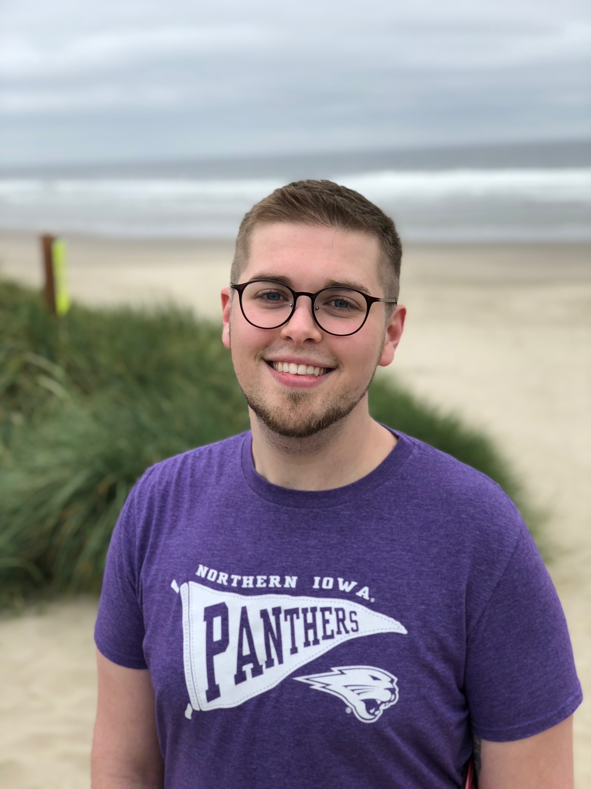
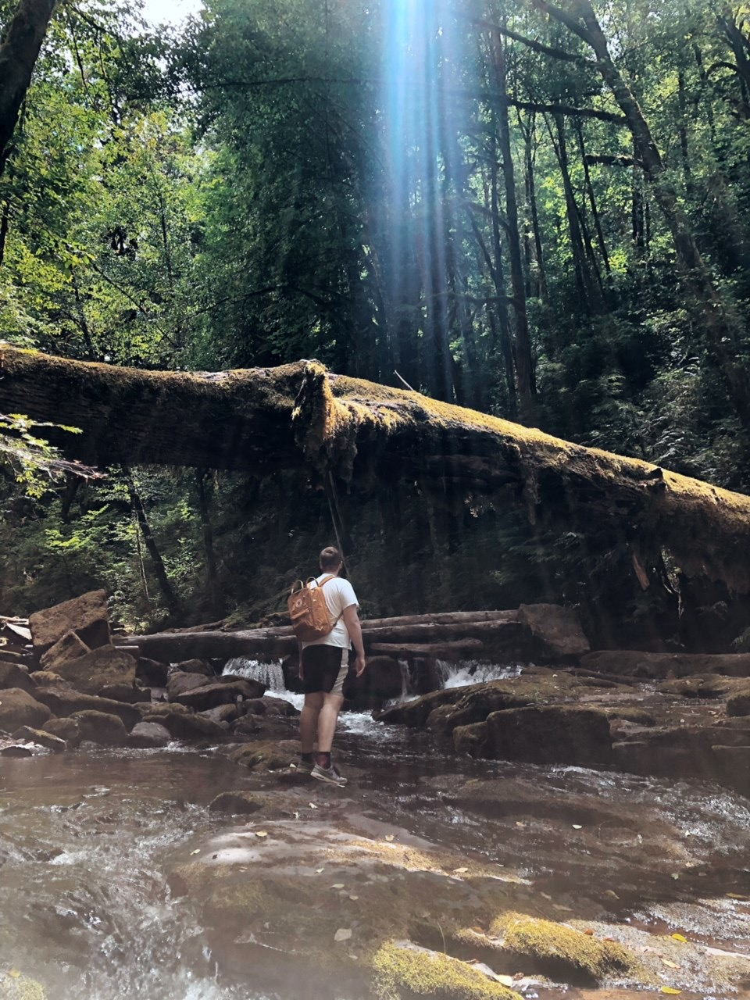
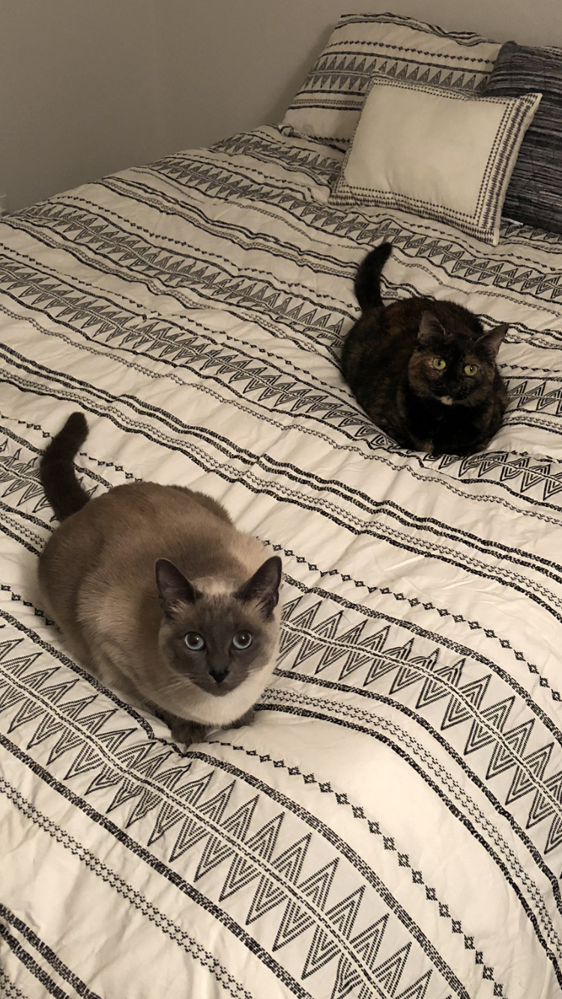
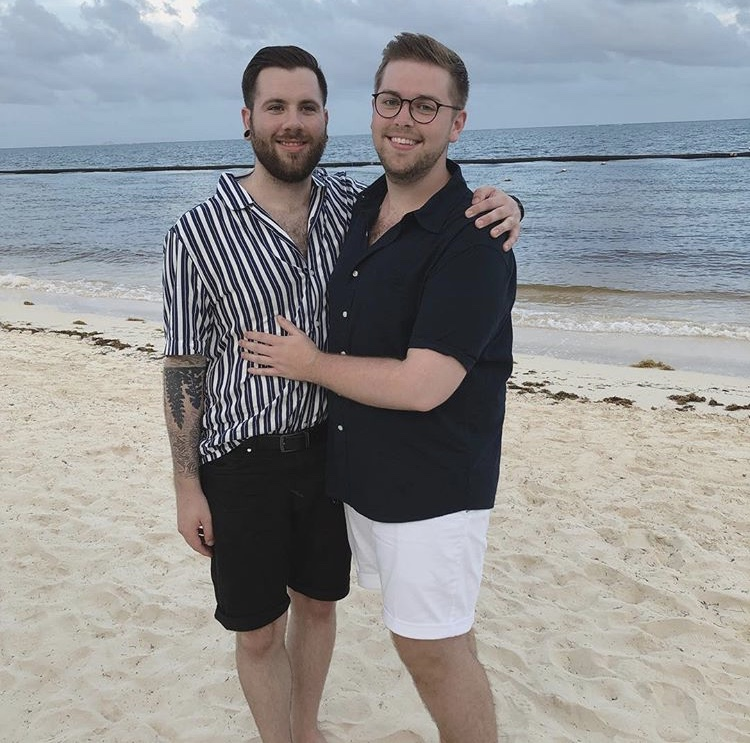

My name is Gunnar Whisler and this section is an opportunity for readers to get to know a little bit more about me specifically. My journey to this program began back in Iowa at my alma mater, the University of Northern Iowa (UNI) to be specific. I had many great student affairs experiences in orientation, dining services, and cultural engagement centers that inspired me to take the next step in learning about the field of student affairs and higher education in general. While I am certainly grateful for my upbringing and foundations that UNI provided for me, I sought a graduate program that would simultaneously push me out of my comfort zone to inspire holistic growth and foster experiences that centered inclusivity and diversity. After navigating the graduate school search process, OSU and the CSSA program felt like it was the school and program that checked all of the boxes and I ultimately made the decision with my partner to move forward in my education and attend OSU.
With growth, there are many times growing pains. My process with this program has been full of pain, yet has been equally full of joy. My first year was incredibly difficult and it felt as if I was trying to love something that was never going to love me back. Rather than getting to apply concepts, theories, etc. learned from class in a student affairs capacity, I had to take a job working in healthcare to pay bills and stay afloat. There were so many questions about if I had made the right choice and worrying thoughts that filled my brain. My classes, various faculty, and my wonderful cohort anchored me and kept me motivated to stay in the program despite later switching the eCampus version. There were so many times that I had to remind myself of my “Why?”. Why was this field important to me? Why do I care so much about this program? Why am I willing to continually receive empty promises and disappointment? This portfolio has been intrinsic in how I have come to provide answers to those questions for myself. I believe I can now say that I have reached a point where I am seeing the fruits of my efforts over the last two years. This program tested me in ways I could not have foreseen, and I am exceptionally proud of my resilience and persistence that has pushed me to the end.
My professional growth has taken off with the help of people and various campus entities that I have connected with throughout my time in the CSSA program. You will see throughout my portfolio that I rely on my experiences in working with the foundations of mentorship and mentoring approaches, student interactions in student conduct and academic advising settings, and classroom artifacts and concepts as evidence of my growth and knowledge as required by the CSSA program’s core concepts and competencies. The work that I have done and engaged in has not only enhanced my knowledge in the areas of advising and student conduct, but solidified my desire to continue in working more closely with these functional areas. While I have found that there are many parallels between these two areas, I have found that the basis of my interest in these two areas is in the one-on-one (1:1) setting in which both these functional areas allow for. This is also something that shows up as a motivational factor in my interest to work intently with mentorship concepts and investigate how mentorship is greatly interconnected with student success. It has been through my opportunities in each respective area that I have become more confident in the direction(s) I hope to go in for my career, knowing that I will always have a solid foundation created in collaboration with my connections at OSU to return to when needed.
Framing my goals in the context of the next five years can be difficult because of the fact that I am still exploring and navigating my twenties. As I set my sights on what is next for me, I am admittedly anxious but overall confident. My primary and immediate goal is to attain a position within an institution and office that will promote further growth and strengthens my student-centered approach to my practice. As a new professional to the student affairs field and the professional world in general, I am intrigued by the possibilities of working more thoroughly and intentionally whether it be in a conduct or academic advising setting. A goal for myself that is both short term and intermediate is to find general stability in my professional and personal life. This stability for me looks like setting boundaries and being able to care not just for myself, but for my family and friends. My process in CSSA has taught me that for me, career goals are good, but they should remain as that. It is important to me to have personal goals that exist outside of the career world and I greatly appreciate the fact that it is possible to be successful and happy in student affairs while maintaining a work-life balance. A long term goal of mine is to consistently be aware of and act in accordance with the importance of work-life balance.
Despite a rocky beginning, the CSSA program has provided me the opportunities I was seeking prior to joining the OSU community. As someone that thrives on preparing, I could not have possibly planned for every twist and turn in my CSSA journey. For every reason I was given to quit or give up, I always found two more reasons as to why I should stay. An unexpected concept that will influence my approach to my own practice is found in the gift of resilience and persistence. I will forever be thankful to those that stood with me throughout the many obstacles and bumps in the road and the unwavering support I felt, especially in the lowest of times. In the wise words of a student I once had the opportunity of working with, “Nothing worth having is done alone.”
And to that I say, “thank u, next.” *cue “thank u, next by Ariana Grande*